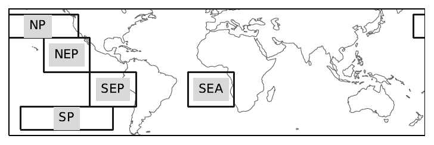

Marine Cloud Brightening
Background and Introduction
The AIbedo project will use the AI model to evaluate some possible environmental impacts of a climate intervention strategy1,2 known as Marine Cloud Brightening (MCB). Climate Intervention (sometimes also called “climate engineering’ or geoengineering) refers to a proposed deliberate intervention in the climate system to counter some impacts of global warming from increased greenhouse gas concentrations. Two main classes of climate intervention have been proposed: the first operates by reducing the concentration of greenhouse gases (called ‘Carbon Dioxide Removal’), and the other attempts a cooling of the planet by introducing small changes in the planet’s energy budget (these strategies are often called ‘sunlight reflection methods’ or SRM). MCB3 falls into the second category of methods, attempting to increase the reflectivity, areal extent, and persistence of marine clouds that scatter sunlight back to space (i.e. to “brighten” them) by introducing additional sea-spray particles nearby those clouds. Sea spray particles are very efficient nuclei for cloud drop formation, and introducing additional particles in excess of ambient concentrations influence the number of droplets that form in those clouds. Cloud reflectivity is proportional to the surface area of the cloud drops so increasing the number of cloud drops (and decreasing the cloud drop radius) has a big impact on cloud brightness. Changing the number of cloud droplets also affects the rate that clouds grow, precipitate and decay, affecting the lifetime of clouds and their frequency of occurance. So called ‘ship tracks’ (cloud streaks that form following emission of pollution particles from freighters) provide dramatic evidence of the impact of particle on cloud properties. There are a few regions of the planet with cloud systems believed to be particularly susceptible to particle emissions.
Our project investigates the impact of MCB on model climate in 3 stages: During Stage 1 we will use CESM2 to participate in a small intercomparison activity with a couple of other model groups to explore impacts of MCB in marine regions known to be susceptible to changes in cloud condensation nuclei, and evaluate model responses. The experimental design for the study is inspired by previous studies of Jones et al (20094, 20125), and Rasch et al (20096), but it is intended to allow a more systematic evaluation of the regional effects of MCB to facilitate comparison between models, and allow a comparison with another climate intervention technique known as Stratospheric Aerosol Injection (SAI). In Stage 2 we will compare the responses of the full Global Climate Models (GCM) with the predicted responses produced using using the AIbedo ML model. In Stage 3 we will use the AIbedo model to assess the impact of MCB on events relevant to tipping points.
Stage 1: Climate Model Perturbations
The intercomparison activity if intended to look for common, and differing impacts of MCB in three different climate models (the DOE E3SM model, the CESM2 (done within this project), and the United Kingdom Meteorological Office model (UKMO-ESM).The study uses 9 sets of simulations to sstablish some baseline simulations for each model in the presence of recent greenhouse gas and pollutant emissions, land use and land cover changes, and then use a projection of possible changes in these quantities by assuming a specific “Shared Socioeconomic Pathway” (SSP) identifying how global society, demographics and economics might change those quantities over the rest of this century. The activity will use SSP2-4.5, a moderate projection assuming that social, economic, and technological trends for addressing CO2 emissions do not shift markedly from historical patterns. Development and income growth proceeds unevenly, with some countries making relatively good progress while others fall short of expectations.
The study then explores and evaluates climate responses in each model over that same period if some cloud features (reflectivity, areal extent, and precipitation) in specific regions are perturbed, to identify what impacts might occur to temperature fields, winds, ocean currents, precipitation, etc.
A targeted cooling will be established for five geographic regions with a total cooling that is intended to counteract some of the warming associated with doubling of CO2. These regions are located in the subtropical ocean adjacent to land masses where extensive and persistent stratus and trade cumulus clouds are found, as well as some other marine low clouds in midlatitudes. The regions are intended to cover 15-20% of the global ocean, with a target of a total global forcing magnitude of 1.8 W/m2, which is about half the forcing associated with a doubling of CO2. The cooling is intended to help in “shaving off” the peak in warming that is projected to occur in all but the most ambitious scenarios that address GHG emissions for the century if no intervention methods are employed.
We plan to first do the study with E3SM, then repeat it with CESM, and the UKMO Earth System model. The project will first introduce perturbations in the cloud fields in the CESM2 model in 5 regions of the planet (see figure 1), and then introduce similar changes in the AIbedo AI model to see how accurate the AI model is reproducing/predicting the response of the GCM.
{kind=link}
The specific science questions to be addressed by these experiments are:
Q1. What are the climatic consequences of increasing the albedo in regions of the planet known for persistent marine cloud distributions?
Q2. Are the climate effects linear with respect to the regions?
Q3. How do the climate responses scale with the amplitude of the forcing?
Q4. Is the response to MCB sensitive to the background state of the atmosphere? Interannual, decadal, longer?
Q5. Are consistent signatures seen across models? e.g. Amazon precipitation? Impacts on sea ice and polar climate?
Q6. What is the variability of the climate response?
Q7. Can one “optimize” the MCB to achieve particular climate goals?
Stage 2: AIbedo ML Model Perturbations
Stage 3: Projections on Tipping Point Impacts:
References
Mcnutt, Marcia, et al. Climate Intervention: Carbon Dioxide Removal and Reliable Sequestration. Washington, D.C.: National Academies Press, 2015. https://doi.org/10.17226/18805.
Mcnutt, Marcia, et al. Climate Intervention: Reflecting Sunlight to Cool Earth. Washington, D.C.: National Academies Press, 2015. https://doi.org/10.17226/18988.
Latham, John, Keith Bower, Tom Choularton, Hugh Coe, Paul Connolly, Gary Cooper, Tim Craft, et al. “Marine Cloud Brightening.” Philosophical Transactions of the Royal Society A: Mathematical, Physical and Engineering Sciences 370, no. 1974 (September 13, 2012): 4217–62. https://doi.org/10.1098/rsta.2012.0086.
Jones, A., and J. M. Haywood. “Sea-Spray Geoengineering in the HadGEM2-ES Earth-System Model: Radiative Impact and Climate Response.” Atmospheric Chemistry and Physics 12, no. 22 (November 16, 2012): 10887–98. https://doi.org/10.5194/acp-12-10887-2012.
Jones, Andy, Jim Haywood, and Olivier Boucher. “Climate Impacts of Geoengineering Marine Stratocumulus Clouds.” Journal of Geophysical Research 114, no. D10 (May 27, 2009): D10106. https://doi.org/10.1029/2008JD011450.
Rasch, Philip J, John Latham, and Chih-Chieh (Jack) Chen. “Geoengineering by Cloud Seeding: Influence on Sea Ice and Climate System.” Environmental Research Letters 4, no. 4 (October 2009): 045112. https://doi.org/10.1088/1748-9326/4/4/045112.